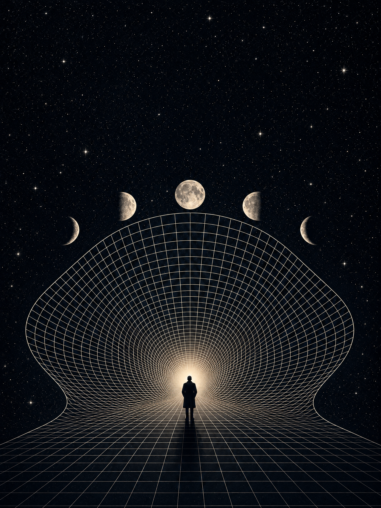
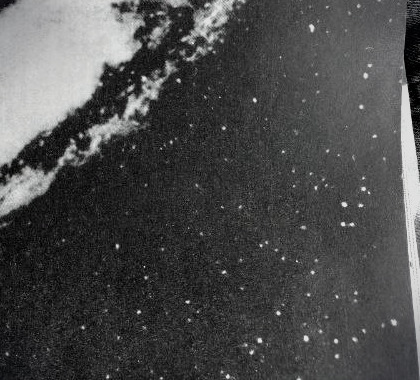

Фестиваль
ПОЛНОЧЬ
25—27 СЕНТЯБРЯ ’26
Маслова Слобода · Тверская область
ЭКСПЕРИМЕНТ ПО СОВМЕСТНОМУ БУДУЩЕМУ
Внимание: сигнал устойчив. Городская спешка остаётся за пределами эфира.

Фестиваль
25—27 СЕНТЯБРЯ ’26
Маслова Слобода · Тверская область
ЭКСПЕРИМЕНТ ПО СОВМЕСТНОМУ БУДУЩЕМУ
Внимание: сигнал устойчив. Городская спешка остаётся за пределами эфира.
Сигнал из будущего · Передача 01
На три дня «Полночь» становится маленькой станцией, где можно отпустить привычное напряжение и снова попасть в творческий поток. Нас вдохновляют грёзы учёных эпохи оттепели: мирное будущее, в котором наука и технологии не торопят человека, а помогают ему жить свободнее, внимательнее и ближе друг к другу.
В таких грёзах было много воздуха: космос, новые знания, внутренняя воля и доверие к общему движению. Мы помним этот образ по спокойным голосам радиодикторов из кинохроники — ясным, негромким и таким, в которые хочется вслушиваться.
На этой частоте мы и проведём выходные. Связь с городом ослабнет. Зато появятся костёр, баня, разговоры, мастерские, музыка, движение и немного времени без задачи быть эффективными.
Не всякая пауза требует заполнения
Полевой журнал № 01 · Территория базы
Передаём с территории базы. У Масловского озера археологи исследуют городище Маслово 1 — поселение первых веков нашей эры. В 2025 году на раскопе открылись плотная застройка, три столбовые постройки, квадратные подполья и остатки бревенчатой оборонительной стены.
Здесь находили тонкостенную лепную керамику, железные ножи, фрагмент топора, шлак и редкие бронзовые украшения. Место продолжает рассказывать о себе — слой за слоем.
Для нас это не урок древней истории, а хороший масштаб: до костра, коллажей и ночной вечеринки эта земля уже хранила дома, следы труда и желание оставаться рядом друг с другом.
Археологи продолжают работу, а мы проведём здесь только три дня — достаточно, чтобы оставить в памяти собственный культурный слой.
96 м² раскопа · три постройки · четыре подполья · один общий сигнал
Лаборатория коллажа · Архив Валерии
В архиве мастерской обнаружены космос, научные хроники, журнальные лица, случайные фразы и немного бумаги, пережившей несколько эпох. Задача не в том, чтобы собрать правильную картинку.
Попробуйте поймать сигнал, который вам хочется забрать в будущее.

Материалы экспедиции: журналы из личного архива Валерии
Передача 02 · Как появилась «Полночь»
Идею фестиваля принесла Валерия. Всё началось с желания организовать юбилей для нашего друга Олега. Но Олег решил взять организацию в свои руки — и тогда мы решили развить идею до конца и сделать свой собственный фестиваль.
Так появился повод уехать вместе в лес: не ради отчёта, не ради идеального лайнапа и не ради того, чтобы успеть всё. А ради друзей, отдыха и пространства, где можно быть внимательнее к себе и к другим.
Мы из МФТИ, любим науку, против войны и мечтаем о светлом будущем. Мы любим творчество — за энергию, за возможность выразить себя и лучше себя понять. И, конечно, мы очень любим наших друзей. Ради этого всё и затевается.
“Полночь” — это не место, где нужно всё успеть
Программа наблюдений · Пятница / суббота
Воскресный режим · Передача 03
По ходу выходных могут происходить вещи, не отмеченные в программе. Все события свободны и не должны мешать отдыху. Если хочется пойти поорать в лес, собирать грибы, порыбачить на озере или просто побыть в тишине — это всегда можно сделать.
Рассекреченные протоколы редакции · Архив № 10
«Я согласна почти на что угодно, лишь бы было вэлью. Необязательно денежное».
Решение комиссии: принимать в форме разговоров, песен, коллажей и внезапных открытий.
«Так, отмена по куртке NASA, пишут, что это полнейшая паль. У нас на фестивале такого не допускается».
«Ещё деньги собирать не начали, а бюджет фестиваля уже -60к из-за палёных бомберов Balenciaga для Глеба».
Решение комиссии: качество космической экипировки требует дополнительной проверки. Вечеринка от Глеба остаётся в программе.
«Мы гордимся своей работой, мы очень хорошо её сделали. Правда, результатов нет».
Решение комиссии: признать костёр, память и общее присутствие допустимыми результатами.
«Ребята, чтобы не опозориться на лайнапе я записался в школу электронной музыки и диджеинга».
Решение комиссии: повышение квалификации приветствуется.
Найденный сигнал: П · И · Ш · И · !